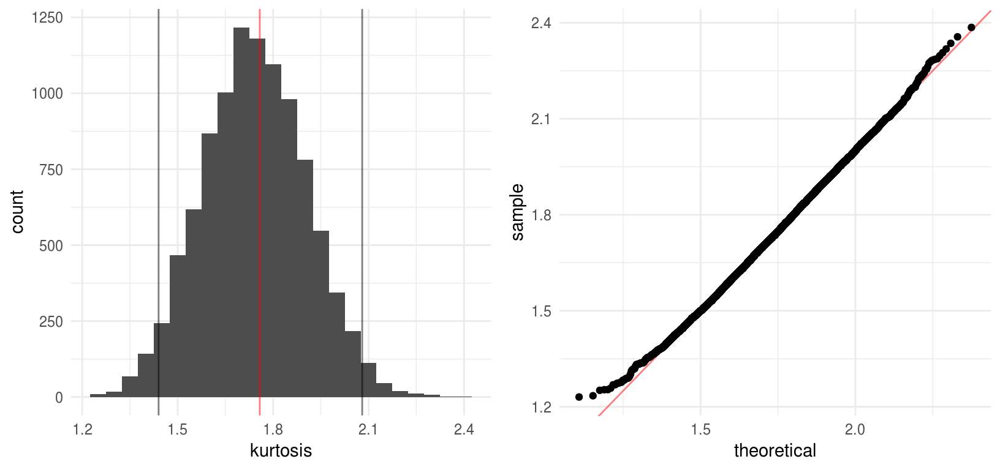
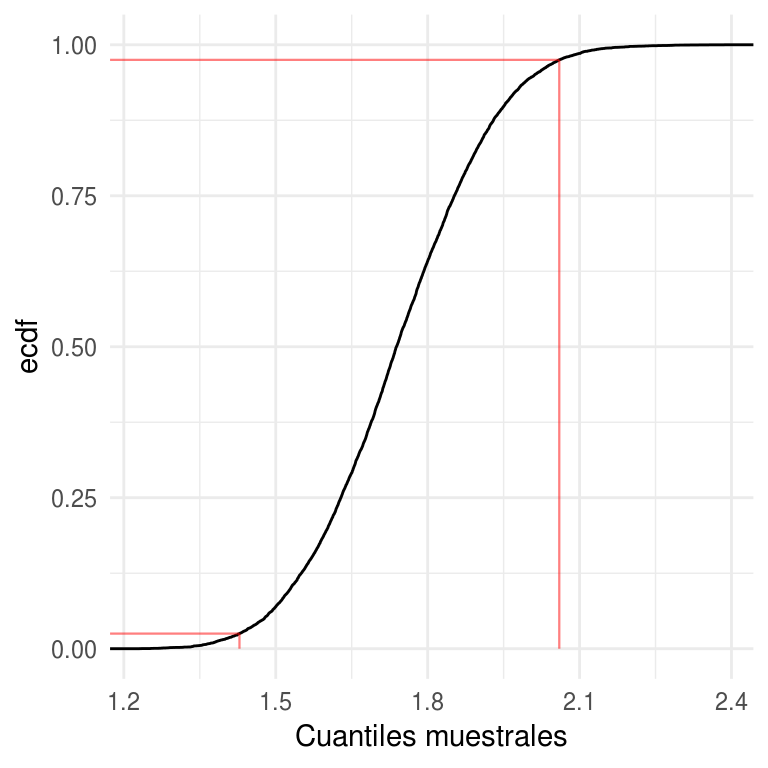
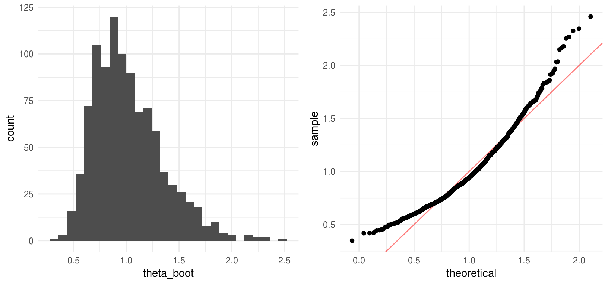
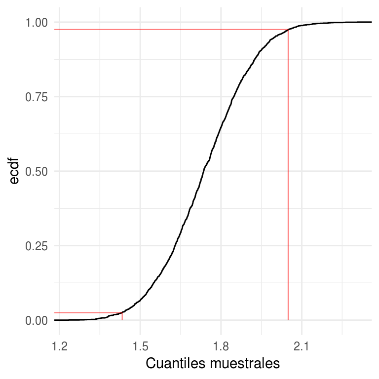
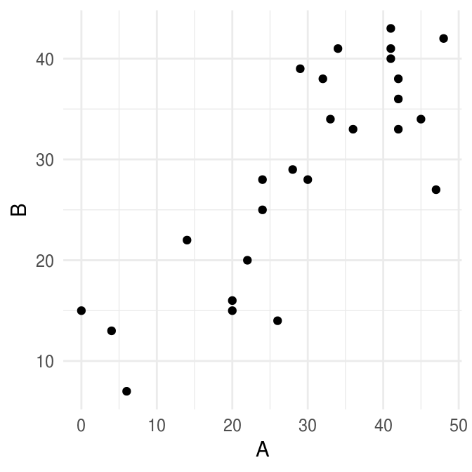

6.3 Intervalos de confianza
Hasta ahora hemos discutido la idea detrás del bootstrap y como se puede usar para estimar errores estándar. Comenzamos con el error estándar pues es la manera más común para describir la precisión de una estadística.
En términos generales, esperamos que \(\bar{x}\) este a una distancia de \(\mu_P\) menor a un error estándar el 68% del tiempo, y a menos de 2 errores estándar el 95% del tiempo.
Estos porcentajes están basados el teorema central del límite que nos dice que bajo ciertas condiciones (bastante generales) de \(P\) la distribución de \(\bar{x}\) se aproximará a una distribución normal:
\[\bar{x} \overset{\cdot}{\sim} N(\mu_P,\sigma_P^2/n)\]
Veamos algunos ejemplos de como funciona el Teorema del Límite Central, buscamos ver como se aproxima la distribución muestral de la media (cuando las observaciones provienen de distintas distribuciones) a una Normal conforme aumenta el tamaño de muestra. Para esto, aproximamos la distribución muestral de la media usando simulación de la población.
Vale la pena observar que hay distribuciones que requieren un mayor tamaño de muestra \(n\) para lograr una buena aproximación (por ejemplo la log-normal), ¿a qué se debe esto?
Para la opción de Elecciones tenemos una población de tamaño \(N=143,437\) y el objetivo es estimar la media del tamaño de la lista nominal de las casillas (datos de las elecciones presidenciales de 2012). Podemos ver como mejora la aproximación Normal de la distribución muestral conforme aumenta el tamaño de muestra \(n\); sin embargo, también sobresale que no es necesario tomar una muestra demasiado grande (\(n = 60\) ya es razonable).
knitr::include_app("https://tereom.shinyapps.io/15-TLC/", height = "900px")En lo que sigue veremos distintas maneras de construir intervalos de confianza usando bootstrap.
Un intervalo de confianza \((1-2\alpha)\)% para un parámetro \(\theta\) es un intervalo \((a,b)\) tal que \(P(a \le \theta \le b) = 1-2\alpha\) para todo \(\theta \in \Theta\).
Y comenzamos con la versión bootstrap del intervalo más popular.
- Intervalo Normal con error estándar bootstrap. El intervalo para \(\hat{\theta}\) con un nivel de confianza de \(100\cdot(1-2\alpha)\%\) se define como:
\[(\hat{\theta}-z^{(1-\alpha)}\cdot \hat{se}_B, \hat{\theta}+z^{(1-\alpha)}\cdot \hat{se})\].
donde \(z^{(\alpha)}\) denota el percentil \(100\cdot \alpha\) de una distribución \(N(0,1)\).
este intervalo está soportado por el Teorema Central del Límite, sin embargo, no es adecuado cuando \(\hat{\theta}\) no se distribuye aproximadamente Normal.
Ejemplo: kurtosis
Supongamos que queremos estimar la kurtosis de una base de datos que consta de 799 tiempos de espera entre pulsasiones de un nervio (Cox, Lewis 1976).
\[\hat{\theta} = t(P_n) =\frac{1/n \sum_{i=1}^n(x_i-\hat{\mu})^3}{\hat{\sigma}^3}\]
nerve <- read_delim("data/nerve.txt", "\t", escape_double = FALSE,
col_names = FALSE, trim_ws = TRUE)
#> Parsed with column specification:
#> cols(
#> X1 = col_double(),
#> X2 = col_double(),
#> X3 = col_double(),
#> X4 = col_double(),
#> X5 = col_double(),
#> X6 = col_double()
#> )
nerve_long <- tidyr::gather(nerve, col, val, X1:X6) %>%
filter(!is.na(val))
kurtosis <- function(x){
n <- length(x)
1 / n * sum((x - mean(x)) ^ 3) / sd(x) ^ 3
}
theta_hat <- kurtosis(nerve_long$val)
theta_hat
#> [1] 1.7579
kurtosis_boot <- function(x, n){
x_boot <- sample(x, n, replace = TRUE)
kurtosis(x_boot)
}
B <- 10000
kurtosis <- rerun(B, kurtosis_boot(nerve_long$val, length(nerve_long$val))) %>%
flatten_dbl()Usando el intervalo normal tenemos:
li_normal <- round(theta_hat - 1.96 * sd(kurtosis), 2)
ls_normal <- round(theta_hat + 1.96 * sd(kurtosis), 2)
c(li_normal, ls_normal)
#> [1] 1.44 2.08Una modificación común del intervalo normal es el intervalo t, estos intervalos son mejores en caso de muestras pequeñas (\(n\) chica).
- Intervalo \(t\) con error estándar bootstrap. Para una muestra de tamaño \(n\) el intervalo \(t\) con un nivel de confianza de \(100\cdot(1-2\alpha)\%\) se define como:
\[(\hat{\theta}-t^{(1-\alpha)}_{n-1}\cdot \hat{se}_B, \hat{\theta}+t^{(1-\alpha)}_{n-1}\cdot \hat{se}_B)\].
donde \(t^{(\alpha)}_{n-1}\) denota denota el percentil \(100\cdot \alpha\) de una distribución \(t\) con \(n-1\) grados de libertad.
n_nerve <- nrow(nerve_long)
li_t <- round(theta_hat + qt(0.025, n_nerve - 1) * sd(kurtosis), 2)
ls_t <- round(theta_hat - qt(0.025, n_nerve - 1) * sd(kurtosis), 2)
c(li_t, ls_t)
#> [1] 1.44 2.08Los intervalos normales y \(t\) se valen de la estimación bootstrap del error estándar; sin embargo, el bootstrap se puede usar para estimar la función de distribución de \(\hat{\theta}\) por lo que no es necesario hacer supuestos distribucionales para \(\hat{\theta}\) sino que podemos estimarla como parte del proceso de construir intervalos de confianza.
Veamos un histograma de las replicaciones bootstrap de \(\hat{\theta}^*\)
nerve_kurtosis <- data_frame(kurtosis)
hist_nerve <- ggplot(nerve_kurtosis, aes(x = kurtosis)) +
geom_histogram(binwidth = 0.05, fill = "gray30") +
geom_vline(xintercept = c(li_normal, ls_normal, theta_hat),
color = c("black", "black", "red"), alpha = 0.5)
qq_nerve <- ggplot(nerve_kurtosis) +
geom_abline(color = "red", alpha = 0.5) +
stat_qq(aes(sample = kurtosis), dparams = list(mean = mean(kurtosis), sd = sd(kurtosis)))
grid.arrange(hist_nerve, qq_nerve, ncol = 2, newpage = FALSE)
En el ejemplo anterior el supuesto de normalidad parece razonable, veamos como se comparan los cuantiles de la estimación de la distribución de \(\hat{\theta}\) con los cuantiles de una normal:
comma(q_kurt <- quantile(kurtosis, probs = c(0.025, 0.05, 0.1, 0.9, 0.95, 0.975)))
comma(qnorm(p = c(0.025, 0.05, 0.1, 0.9, 0.95, 0.975), mean = theta_hat,
sd = sd(kurtosis)))
#> 2.5% 5% 10% 90% 95% 97.5%
#> "1.4" "1.5" "1.5" "2.0" "2.0" "2.1"
#> [1] "1.4" "1.5" "1.5" "2.0" "2.0" "2.1"Esto sugiere usar los cuantiles del histograma bootstrap para definir los límites de los intervalos de confianza:
- Percentiles. Denotemos por \(G\) la función de distribución acumulada de \(\hat{\theta}^*\) el intervalo percentil de \(1-2\alpha\) se define por los percentiles \(\alpha\) y \(1-\alpha\) de \(G\) \[(\theta^*_{\%,inf}, \theta^*_{\%,sup}) = (G^{-1}(\alpha), G^{-1}(1-\alpha))\] Por definición \(G^{-1}(\alpha)=\hat{\theta}^*(\alpha)\), esto es, el percentil \(100\cdot \alpha\) de la distribución bootstrap, por lo que podemos escribir el intervalo bootstrap como \[(\theta^*_{\%,inf}, \theta^*_{\%,sup})=(\hat{\theta}^*(\alpha),\hat{\theta}^*(1-\alpha))\]
ggplot(arrange(nerve_kurtosis, kurtosis)) +
stat_ecdf(aes(x = kurtosis)) +
geom_segment(data = data_frame(x = c(-Inf, -Inf, q_kurt[c(1, 6)]),
xend = q_kurt[c(1, 6, 1, 6)], y = c(0.025, 0.975, 0, 0),
yend = c(0.025, 0.975, 0.025, 0.975)), aes(x = x, xend = xend, y = y,
yend = yend), color = "red", size = 0.4, alpha = 0.5) +
labs(x = "Cuantiles muestrales", y = "ecdf")
Las expresiones de arriba hacen referencia a la situación bootstrap ideal donde el número de replicaciones bootstrap es infinito, en la práctica usamos aproximaciones. Y se procede como sigue:
Intervalo percentil:
Generamos B muestras bootstrap independientes \(\textbf{x}^{*1},..., \textbf{x}^{*B}\) y calculamos las replicaciones \(\hat{\theta}^{*b}=s(x^{*b}).\)
- Sea \(\hat{\theta}^{*}_B(\alpha)\) el percentil \(100\cdot\alpha\) de la distribución empírica de \(\hat{\theta}^{*}\), y \(\hat{\theta}^{*}_B(1-\alpha)\) el correspondiente al percentil \(100\cdot (1-\alpha)\), escribimos el intervalo de percentil \(1-2\alpha\) como \[(\theta^*_{\%,inf}, \theta^*_{\%,sup})\approx(\hat{\theta}^*_B(\alpha),\hat{\theta}^*_B(1-\alpha))\]
ls_per <- round(quantile(kurtosis, prob = 0.975), 2)
li_per <- round(quantile(kurtosis, prob = 0.025), 2)
stringr::str_c(li_normal, ls_normal, sep = ",")
stringr::str_c(li_per, ls_per, sep = ",")
#> [1] "1.44,2.08"
#> [1] "1.43,2.06"Si la distribución de \(\hat{\theta}^*\) es aproximadamente normal, entonces los intervalos normales y de percentiles serán similares.
Con el fin de comparar los intervalos creamos un ejemplo de simulación (ejemplo tomado de Efron and Tibshirani (1993)), generamos una muestra de tamaño 10 de una distribución normal estándar, supongamos que el parámetro de interés es \(e^{\mu}\) donde \(\mu\) es la media poblacional.
set.seed(137612)
x <- rnorm(10)
boot_sim_exp <- function(){
x_boot <- sample(x, size = 10, replace = TRUE)
exp(mean(x_boot))
}
theta_boot <- rerun(1000, boot_sim_exp()) %>% flatten_dbl()
theta_boot_df <- data_frame(theta_boot)
hist_emu <- ggplot(theta_boot_df, aes(x = theta_boot)) +
geom_histogram(fill = "gray30", binwidth = 0.08)
qq_emu <- ggplot(theta_boot_df) +
geom_abline(color = "red", alpha = 0.5) +
stat_qq(aes(sample = theta_boot),
dparams = list(mean = mean(theta_boot), sd = sd(theta_boot)))
grid.arrange(hist_emu, qq_emu, ncol = 2, newpage = FALSE)
La distribución empírica de \(\hat{\theta}^*\) es asimétrica, por lo que no esperamos que coincidan los intervalos.
# Normal
round(exp(mean(x)) - 1.96 * sd(theta_boot), 2)
#> [1] 0.33
round(exp(mean(x)) + 1.96 * sd(theta_boot), 2)
#> [1] 1.62
#Percentil
round(quantile(theta_boot, prob = 0.025), 2)
#> 2.5%
#> 0.54
round(quantile(theta_boot, prob = 0.975), 2)
#> 97.5%
#> 1.78La inspección del histograma deja claro que la aproximación normal no es conveniente en este caso, veamos que ocurre cuando aplicamos la transformación logarítmica.
hist_log <- ggplot(data_frame(theta_boot), aes(x = log(theta_boot))) +
geom_histogram(fill = "gray30", binwidth = 0.08)
qq_log <- ggplot(data_frame(theta_boot)) +
geom_abline(color = "red", alpha = 0.5) +
stat_qq(aes(sample = log(theta_boot)),
dparams = list(mean = mean(log(theta_boot)), sd = sd(log(theta_boot))))
grid.arrange(hist_log, qq_log, ncol = 2, newpage = FALSE)
Y los intervalos se comparan:
# Normal
round(mean(x) - 1.96 * sd(log(theta_boot)), 2)
#> [1] -0.64
round(mean(x) + 1.96 * sd(log(theta_boot)), 2)
#> [1] 0.59
#Percentil
round(quantile(log(theta_boot), prob = 0.025), 2)
#> 2.5%
#> -0.62
round(quantile(log(theta_boot), prob = 0.975), 2)
#> 97.5%
#> 0.58La transformación logarítmica convierte la distribución de \(\hat{\theta}\) en normal y por tanto los intervalos de \(\hat{\phi}^*=log(\hat{\theta}^*)\) son similares. La forma normal no es sorprendente pues \(\hat{\phi}^*=\bar{x}^*\).
Si mapeamos los intervalos normales calculados para \(log(\hat{\theta}^*)\) de regreso a la escala de \(\theta\) obtenemos intervalos similares a los calculados para \(\hat{\theta}^*\) usando percentiles:
exp(round(mean(x) - 1.96 * sd(log(theta_boot)), 2))
#> [1] 0.52729
exp(round(mean(x) + 1.96 * sd(log(theta_boot)), 2))
#> [1] 1.804Podemos ver que el método de aplicar una transformación, calcular intervalos usando la normal y aplicar la transformación inversa para volver a la escala original genera intervalos de confianza atractivos, el problema con este método es que requiere que conozcamos la transformación adecuada para cada parámetro.
Por otra parte, podemos pensar en el método del percentil como un algoritmo que incorpora la transformación de manera automática:
- Intervalos acelerados y corregidos por sesgo. Esta es una versión mejorada del intervalo de percentil, la denotamos \(BC_{a}\) (bias-corrected and accelerated).
Usaremos un ejemplo de Efron and Tibshirani (1993), los datos constan de los resultados en dos pruebas espaciales de 26 niños con algún problema neurológico. Supongamos que queremos calcular un intervalo de confianza de 90% para \(\theta=var(A)\). El estimador plugin es: \[\hat{\theta}=\sum_{i=1}^n(A_i-\bar{A})^2/n\] notemos que el estimador plug-in es ligeramente menor que el estimador usual insesgado: \[\hat{\theta}=\sum_{i=1}^n(A_i-\bar{A})^2/(n-1)\]
library(bootstrap)
ggplot(spatial) +
geom_point(aes(A, B))
sum((spatial$A - mean(spatial$A)) ^ 2) / nrow(spatial)
#> [1] 171.53
sum((spatial$A - mean(spatial$A)) ^ 2) / (nrow(spatial) - 1)
#> [1] 178.4El método \(BC_{a}\) corrige el sesgo de manera automática, lo cuál es una de sus prinicipales ventajas comparado con el método del percentil.
<div class=“caja> Los extremos en los intervalos \(BC_{a}\) están dados por percentiles de la distribución bootstrap, los percentiles usados dependen de dos números \(\hat{a}\) y \(\hat{z}_0\), que se denominan la aceleración y la corrección del sesgo: \[BC_a : (\hat{\theta}_{inf}, \hat{\theta}_{sup})=(\hat{\theta}^*(\alpha_1), \hat{\theta}^*(\alpha_2))\] donde \[\alpha_1= \Phi\bigg(\hat{z}_0 + \frac{\hat{z}_0 + z^{(\alpha)}}{1- \hat{a}(\hat{z}_0 + z^{(\alpha)})}\bigg)\] \[\alpha_2= \Phi\bigg(\hat{z}_0 + \frac{\hat{z}_0 + z^{(1-\alpha)}}{1- \hat{a}(\hat{z}_0 + z^{(1-\alpha)})}\bigg)\] y \(\Phi\) es la función de distribución acumulada de la distribución normal estándar y \(z^{\alpha}\) es el percentil \(100 \cdot \alpha\) de una distribución normal estándar.Notemos que si \(\hat{a}\) y \(\hat{z}_0\) son cero entonces \(\alpha_1=\alpha\)
y \(\alpha_2=1-\alpha\), obteniendo así los intervalos de percentiles.
El valor de la corrección por sesgo \(\hat{z}_0\) se obtiene de la
propoción de de replicaciones bootstrap menores a la estimación original
\(\hat{\theta}\),
\[z_0=\Phi^{-1}\bigg(\frac{\#\{\hat{\theta}^*(b) < \hat{\theta} \} }{B} \bigg)\]
a grandes razgos \(\hat{z}_0\) mide la mediana del sesgo de \(\hat{\theta}^*\), esto es, la discrepancia entre la mediana de \(\hat{\theta}^*\) y \(\hat{\theta}\) en unidades normales.
Por su parte la aceleración \(\hat{a}\) se refiere a la tasa de cambio del error estándar de \(\hat{\theta}\) respecto al verdadero valor del parámetro \(\theta\). La aproximación estándar usual \(\hat{\theta} \approx N(\theta, se^2)\) supone que el error estándar de \(\hat{\theta}\) es el mismo para toda \(\hat{\theta}\), esto puede ser poco realista, en nuestro ejemplo, donde \(\hat{\theta}\) es la varianza si los datos provienen de una normal \(se(\hat{\theta})\) depende de \(\theta\). Una manera de calcular \(\hat{a}\) es
\[\hat{a}=\frac{\sum_{i=1}^n (\hat{\theta}(\cdot) - \hat{\theta}(i))^3}{6\{\sum_{i=1}^n (\hat{\theta}(\cdot) - \hat{\theta}(i))^2\}^{3/2}}\]
Los intervalos \(BC_{a}\) tienen 2 ventajas teóricas:
Respetan transformaciones, esto nos dice que los extremos del intervalo se transforman de manera adecuada si cambiamos el parámetro de interés por una función del mismo.
Su exactitud, los intervalos \(BC_{a}\) tienen precisión de segundo orden, esto es, los errores de cobertura se van a cero a una tasa de 1/n.
Los intervalos \(BC_{a}\) están implementados en el paquete boot (boot.ci()) y
en el paquete bootstrap (bcanon()). La desventaja de los intervalos \(BC_{a}\) es
que requieren intenso cómputo estadístico, de acuerdo a Efron and Tibshirani (1993) al
menos \(B= 1000\) replicaciones son necesairas para reducir el error de muestreo.
Ante esto surgen los intervalos ABC (approximate bootstrap confidence intervals), que es un método para aproximar \(BC_{a}\) analíticamente (usando expansiones de Taylor).
Usando la implementación del paquete bootstrap:
library(bootstrap)
var_sesgada <- function(x) sum((x - mean(x)) ^ 2) / length(x)
bcanon(x = spatial[, 1], nboot = 2000, theta = var_sesgada, alpha = c(0.025, 0.975))
#> $confpoints
#> alpha bca point
#> [1,] 0.025 104.08
#> [2,] 0.975 281.70
#>
#> $z0
#> [1] 0.14717
#>
#> $acc
#> [1] 0.06124
#>
#> $u
#> [1] 164.39 176.72 174.52 178.38 172.05 172.05 174.52 172.05 175.96 173.04
#> [11] 168.60 168.20 155.12 141.81 177.93 178.28 177.61 151.02 178.17 177.07
#> [21] 165.88 173.04 177.07 177.84 178.39 173.04
#>
#> $call
#> bcanon(x = spatial[, 1], nboot = 2000, theta = var_sesgada, alpha = c(0.025,
#> 0.975)) Comapara el intervalo anterior con los intervalos
normal y de percentiles.
Comapara el intervalo anterior con los intervalos
normal y de percentiles.
Otros intervalos basados en bootstrap incluyen los intervalos pivotales y los intervalos bootstrap-t. Sin embargo, BC y ABC son mejores alternativas.
- Intervalos pivotales. Sea \(\theta=s(P)\) y \(\hat{\theta}=s(P_n)\) definimos el pivote \(R=\hat{\theta}-\theta\). Sea \(H(r)\) la función de distribución acumulada del pivote: \[H(r) = P(R<r)\]
Definimos \(C_n^*=(a,b)\) donde: \[a=\hat{\theta}-H^{-1}(1-\alpha), b=\hat{\theta}-H^{-1}(\alpha)\] \(C_n^*\) es un intervalo de confianza de \(1-2\alpha\) para \(\theta\); sin embargo, \(a\) y \(b\) dependen de la distribución desconocida \(H\), la podemos estimar usando bootstrap: \[\hat{H}(r)=\frac{1}{B}\sum_{b=1}^B I(R^*_b \le r)\] y obtenemos \[C_n=(2\hat{\theta} - \hat{\theta}^*_{1-\alpha}, 2\hat{\theta} + \hat{\theta}^*_{1-\alpha})\]
Exactitud en intervalos de confianza. Un intervalo de \(95%\) de confianza exacto no captura el verdadero valor \(2.5%\) de las veces, en cada lado.
Un intervalo que sub-cubre un lado y sobre-cubre el otro es sesgado.
Los intervalos estándar y de percentiles tienen exactitud de primer orden: los errores de cobertura se van a cero a una tasa de \(1/\sqrt{n}\).
Los intervalos \(BC_a\) tienen exactitud de segundo orden: los errores de cobertura se van a cero a una tasa de \(1/n\).
Referencias
Efron, Bradley, and Robert J. Tibshirani. 1993. An Introduction to the Bootstrap. Monographs on Statistics and Applied Probability 57. Boca Raton, Florida, USA: Chapman & Hall/CRC.